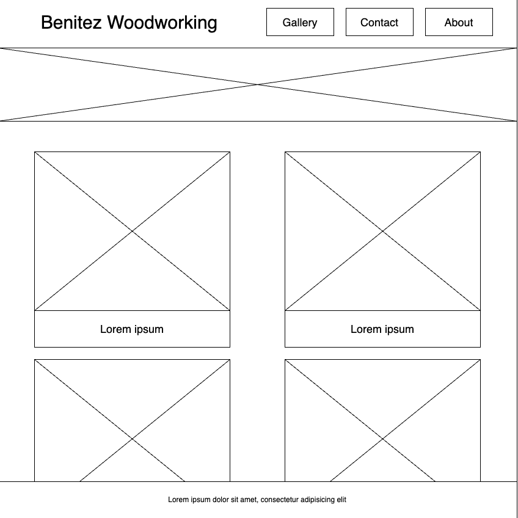
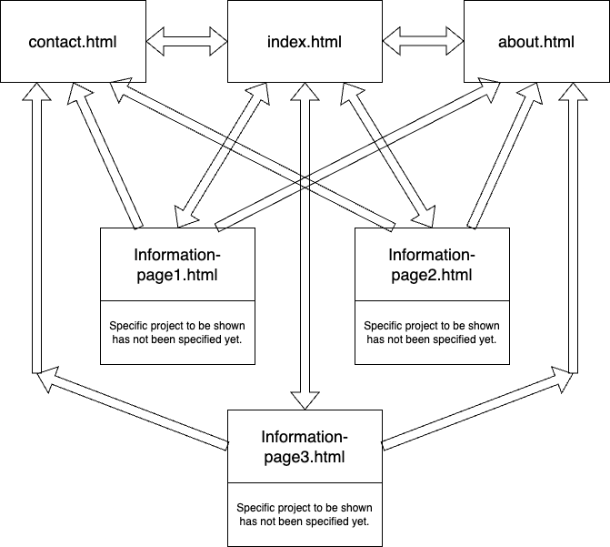

My project is going to be a carpenter's page to display pictures of woodworking projects.
The client is going to be my dad, as for well over 3 years at this point he has wanted a website to show his works.
This will allow him to easily show his work to people in a singular easy place along with contact information.
No input will be needed on the visiter's end, it is purely being built to give him his own platform.
The intended users of this is going to be people who are potential customers of my dad. This will allow him to put
a link on his cards he gives to people so they can see his work without him having to individually send people pictures
and other information. My dad has laid out what he would like to be on the website so people can contact him and be able
to get their own product from him.
Content on the website is going to be a a small collection of pictures to show some of the work done. There will be
a small introduction, and a top navigation bar to find a gallery with a collection of even more photos. The gallery will
be split into different categories that my dad works in. The categories for example will include nightstands and bedframes,
cabinets, countertops, tables, shelves, and closet linings. In addition, there will also be a list of things my dad has done for
clients such as replacing windows, doors, flooring, and building porches for people. There will be some pictures included, but it
will not be a main focus.
Client Information
Abelardo Benitez Sr.
Personal Endeavors
Phone Number: 980-680-7746
Wireframe

Wireframe prototype of the default webpage
Site Map

Sitemap showing how all the webpages connect to one another.
Page Design
Home page
Page Purpose
This is the default page. This is seen as a quick introduction to any projects the client
has worked on, and allows their customers to navigate quickly to find information needed.
Audience
For the customers when visting the webpage.
Page Content
Has images and titles that link to information pages about the project being shown on home page.
Is data being entered?
No data being entered.
Will they need validation?
N/a
Hyperlinks or drop downs?
Links to home page by clicking website name, gallery, about, and contact.
Actions to be incorporated
User will be taken to information page they clicked on.
Special Notes
N/a
About page
Page Purpose
This page is where the client would like to add some information about themselves. They
seem to be on the fence about this at the moment.
Audience
For users to find out more about who they will be doing business with.
This is more for people who the client has ot had enough time to talk to,
but wants people to know about themself.
Page Content
Information about the client, and a couple of pictures.
Is data being entered?
No data being entered.
Will they need validation?
N/a
Hyperlinks or drop downs?
Links to home page by clicking website name, gallery, about, and contact.
Actions to be incorporated
N/a
Special Notes
Gallery page
Page Purpose
This page will have pictures of work the client wants shown to potential
customers. This page is purely focused on images, and nothing else.
Audience
Users to look at images, and possibly find something they would like made.
Using past projects as an ability to advertise is something the client does already,
and having a place online with the images will find it without more effort from the client.
Page Content
Images, and only images with captions. Depending on images being shown, the client may want them sorted.
Is data being entered?
No data being entered.
Will they need validation?
N/a
Hyperlinks or drop downs?
Links to home page by clicking website name, gallery, about, and contact.
Actions to be incorporated
Images clicked on will be enlarged to give users an easier view.
Special Notes
N/a
Contact page
Page Purpose
Gives users easy access to contact the client.
Audience
Users interested in a project, or questions about a project.
Page Content
This will include some ways to get in contact with the client. This will include
phone number and email.
Is data being entered?
No data being entered.
Will they need validation?
N/a
Hyperlinks or drop downs?
Links to home page by clicking website name, gallery, about, and contact.
Actions to be incorporated
Clicking email will open the default mail client, to avoid misspelling,
and give the user one less thing to do to contact client.
Special Notes
N/a
Information page(s)
Page Purpose
The client has some projects they want shown, and having these information pages
will allow them to show specifics on the project, which will help
potential customers to make a more informed decision in what they would look for.
Audience
These pages are there for potential customers to look at these works and help
them understand more about the project being shown.
Page Content
These pages will include at most a few pictures of the work in question, along with
a small amount of information about the work.
Is data being entered?
No data being entered.
Will they need validation?
N/a
Hyperlinks or drop downs?
Links to home page by clicking website name, gallery, about, and contact.
Actions to be incorporated
None to be added for this page.
Special Notes
N/a
Design Functionality
Home page
The interactivity being brought to the home page will be the images that lead
to the information pages, they will expand giving a caption on what the project was
without making the home page feel bloated. If the user decides they would like to see more
information about the project, they can click on a button that will show up that will take them
to the specific information page.
Contact page
The only interactivity on this page will be a link to opening the default mail client the user has.
Nothing Javascript related has been decided for this page.
About page
Interactivity just like the contact page will be minimal if any is added at all, links to the home page
or contact page will work, but nothing on this page will require input from the user.
Gallery page
The gallery will be interactive with Javascript for every photo on the page, which will include expanding the image
and having a caption with the picture. The gallery itself has not been decided, but the client does not want the page
to feel like it scrolls forever, so the idea is to implement a carousel of images which will be sorted out.
This could also lead to a filter being implemented, which will make the photo gallery easier for the user to navigate.
The navigation bar may be smaller on this page to give the user more of the viewport to look at images as well.